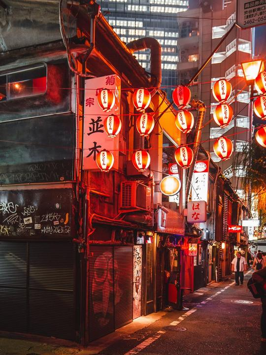
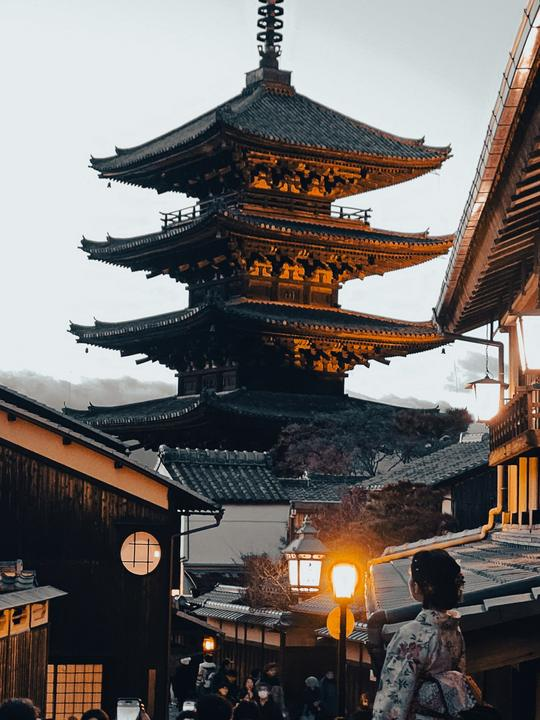
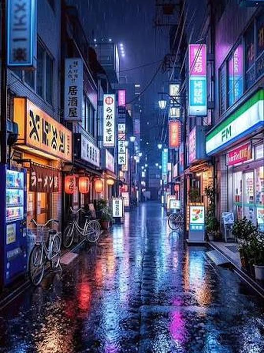

Ana sayfa / Yerleşim Desteği
Gelmeden yerinizi bulun, geldiğinizde hazır bir düzene adım atın.
Japonya'da kiralık konut bulmaktan geçici konaklamaya, uzaktan mülk kontrolünden taşınma sonrası kurulum işlerine kadar yerleşim sürecinizi sizin adınıza yerinde yürütüyoruz.



Üç adımda ilerliyoruz. İlk adım için hazırlık yapmanız gerekmez.
Evet. Gelmeden önce seçenekleri sizinle birlikte değerlendiriyor, süreci sizin adınıza yerinde yürütüyoruz. Böylece geldiğinizde hazır bir düzene adım atarsınız.
Evet. Kısa kalışlar için konumu ve fiyatı size uygun otel ve geçici konaklama seçeneklerini öneriyor, rezervasyonu kolaylaştırıyoruz.
Evet. Mülkü yerinde inceliyor, gördüklerimizi size aktarıyoruz.
Kapsam ihtiyacınıza göre değişir. Görüşmede neyin yapılacağını netleştirir, gizli masraf olmadan baştan bilgilendiririz.
Kısaca ihtiyacınızı yazın ya da yüz yüze görüşme için randevu alın. Gerisini birlikte netleştiririz.